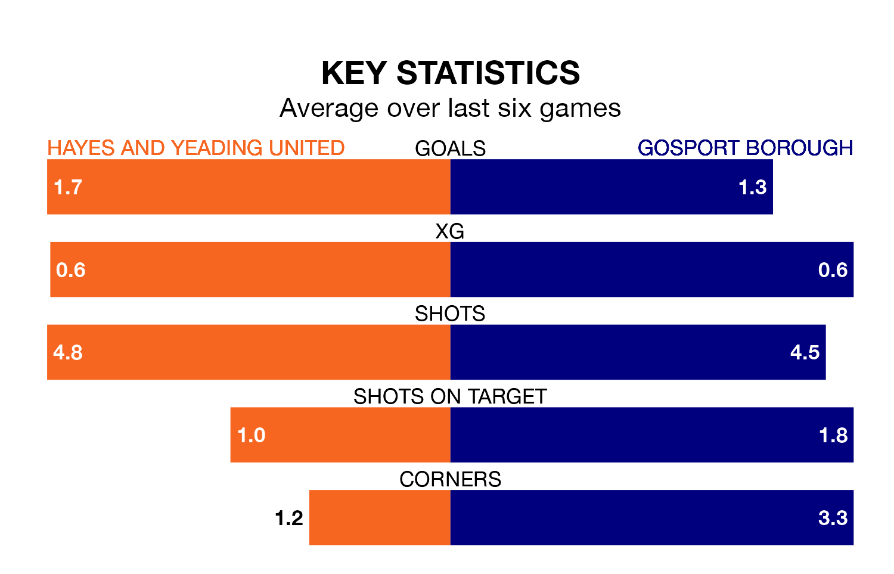

Gosport Borough travel to the SKYex Community Stadium for Saturday's match against Hayes and Yeading United looking to bounce back from defeat last time out in the Southern League Premier South.
Gosport, who sit third in the league after 32 games, fell to a 2-1 home defeat to Poole Town on Wednesday.
They face a Hayes & Yeading side who secured a draw in their last match, a 1-1 tie with Merthyr Town, and who sit 16th in the table.
With 58 goals in 32 games so far this season, Gosport are scoring more than average in the league with 1.8 goals per game. And they are conceding fewer than average, letting in 34 goals at a rate of 1.1 per game.
Hayes & Yeading, meanwhile, are below average scorers, with 1.6 goals per game, compared to a league average of 1.7. They have also conceded 1.6 goals per game.
In the last 10 years, Hayes & Yeading and Gosport have played each other on 10 occasions. Hayes & Yeading won three of them, Gosport five, and they drew twice.
On average, Hayes & Yeading scored 1.4 goals and Gosport 1.6 in those matches.
Their last meeting was on January 28 2023, when Gosport won 3-2 at home.
United are in mixed form in the Southern League Premier South, with three wins and a draw from their last six games.
With two wins and a draw over that period, Borough's form is worse – they have taken seven points from 18, compared to the home team's 10.
Updated: 09:34 (UTC), 08/03/24